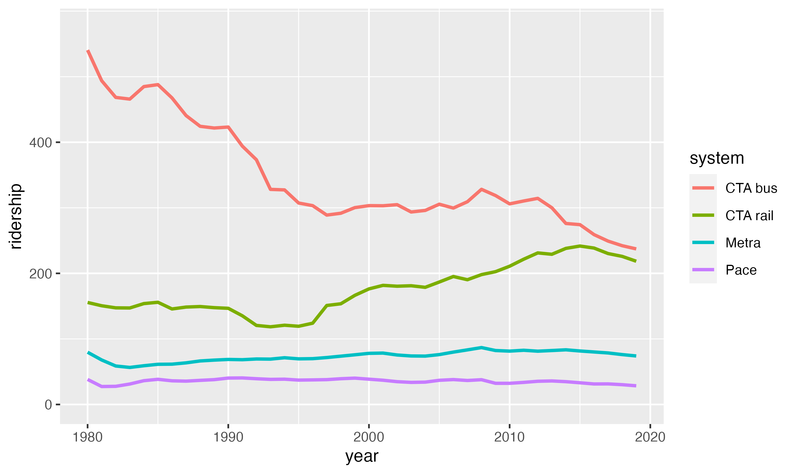
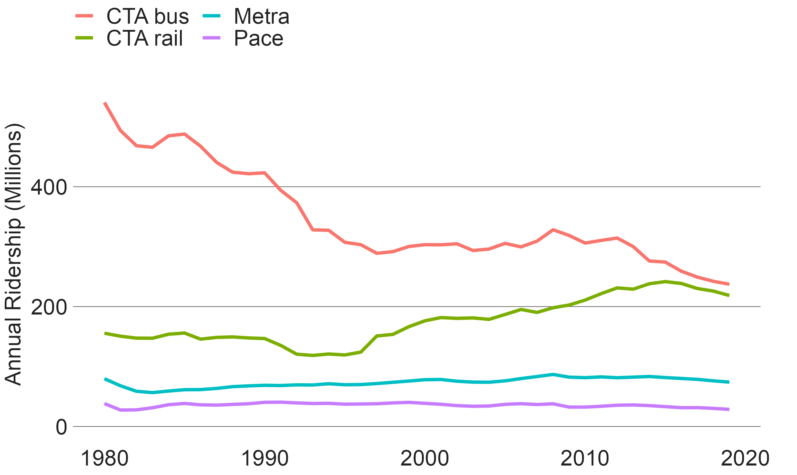
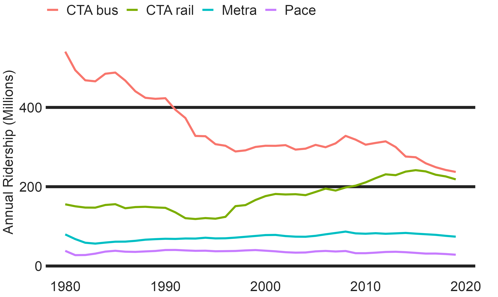
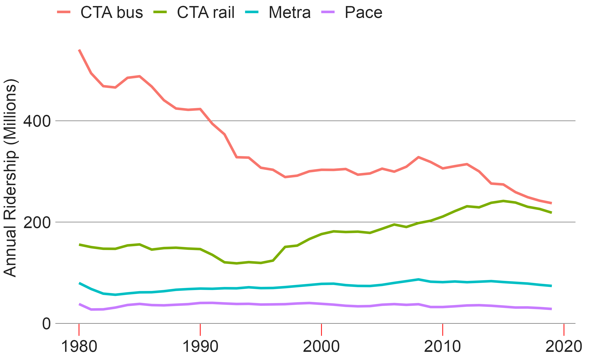
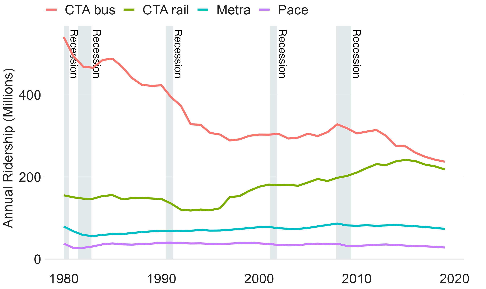
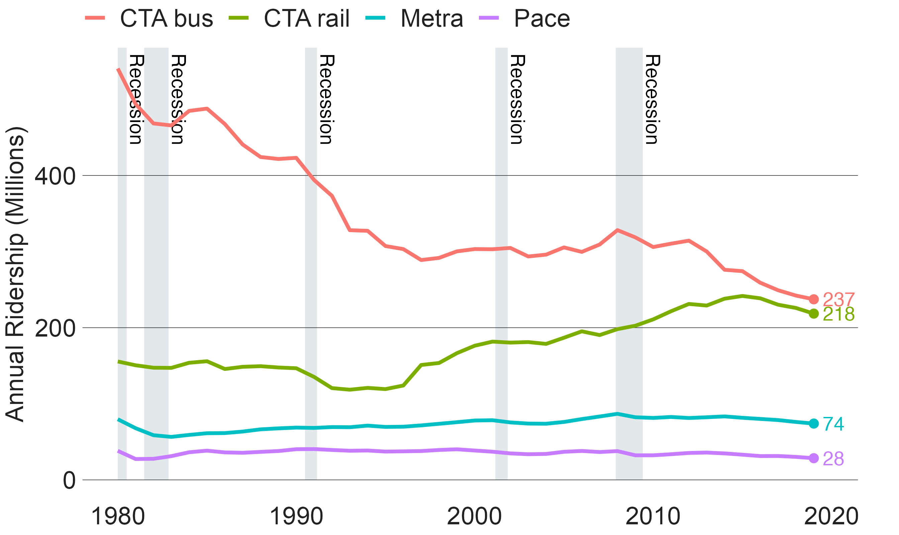
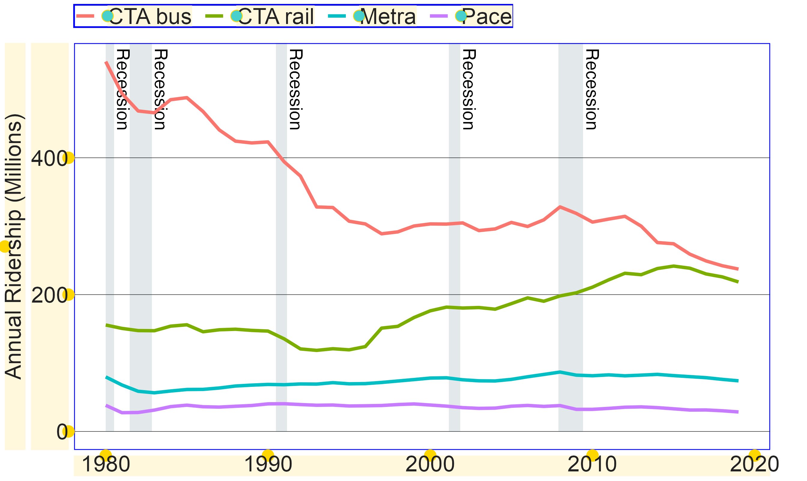

This vignette summarizes the basic formatting that the cmapplot package can add to a ggplot, and provides a series of examples for different types of graphs. The vignette relies on sample CMAP datasets which are included with the package.
Let’s start with a basic time series line graph, drawn using R’s default theme (theme_grey()):
# clean up dataset df <- transit_ridership %>% filter(system != "pace_ada") %>% mutate(system = case_when( system == "cta_bus" ~ "CTA bus", system == "cta_rail" ~ "CTA rail", system == "metra" ~ "Metra", system == "pace" ~ "Pace" )) p <- ggplot(data = df, mapping = aes(x = year, y = ridership, color = system)) + geom_line(size = 1) + scale_y_continuous(breaks = c(0, 200, 400), limits = c(-1, 575)) p

theme_cmap()
To add basic CMAP design elements to the plot, add theme_cmap() like you would any other ggplot theme. The CMAP theme has x and y axis labels turned off by default, but that can be overridden. The help file ?theme_cmap describes how to do this, as well as a variety of other built-in customization functions. theme_cmap() can be used to easily adjust axis, origin, and gridlines.
p + theme_cmap(ylab = "Annual Ridership (Millions)", legend.max.columns = 2) #> 'Whitney' font family not found. Using a substitute...

The package contains a list of default cmapplot_globals$consts that control various plotting constants. Most of these impact the function finalize_plot(), but a few impact theme_cmap(). For a complete description of these constants, see ?cmapplot_globals. These can be modified in the overrides argument:
p + theme_cmap(ylab = "Annual Ridership (Millions)", overrides = list(lwd_gridline = 3)) #> 'Whitney' font family not found. Using a substitute...

In addition, any ggplot theme element can also be modified directly in theme_cmap() by passing valid arguments from the ggplot2::theme() function. In the following example, the addition of axis.ticks.x and the establishment of an axis.ticks.length.x “turns on” the tick marks automatically turned off by theme_cmap’s underlying theme. Note that here, some additional manipulation of the y axis scale is necessary for the axis ticks to touch the lowest horizontal gridline.
p + scale_y_continuous(breaks = c(0, 200, 400), limits = c(-1, 575), expand = c(0, 0)) + theme_cmap(ylab = "Annual Ridership (Millions)", axis.ticks.x = element_line(color = "red"), axis.ticks.length.x = unit(10, "bigpts")) #> Scale for 'y' is already present. Adding another scale for 'y', which will #> replace the existing scale. #> 'Whitney' font family not found. Using a substitute...

geom_recessions()
The cmapplot package also includes two custom geoms that allow the user to easily add common elements used in CMAP plots that would be otherwise difficult to program.
The function geom_recessions(), allows for the addition of rectangles (and text, if desired) representing US economic recessions. The ggplot2 package builds plots from the ground up: geoms are drawn in the order they are added, so the recessions geom should be added before the plot’s primary geom (e.g. geom_line(). In addition, ggplot always draws geoms on top of base plot elements like gridlines. The default fill and alpha for geom_recessions() has been chosen because it is the most transparent way to achieve CMAP palette color #002d49 when drawn on a white background – thus impacting the color of the gridlines as little as possible.
q <- ggplot(data = df, mapping = aes(x = year, y = ridership, color = system)) + geom_recessions(ymin = 0) + geom_line(size = 1) + theme_cmap(ylab = "Annual Ridership (Millions)") #> 'Whitney' font family not found. Using a substitute... q

geom_text_lastonly()
The function geom_text_lastonly() allows the user to label only the final point in a time series. In addition to applying the label, this function can also highlight the final point via an implicit geom_point. Like geom_text, the value of the label can be passed via ggplot’s mapping argument, either in the top-line ggplot() or in geom_text_lastonly().
Due to ggplot’s underlying structure, geom_text labels are clipped by the plot’s default extent. Often, the right side of the plot will need to be expanded–or plot clipping turned off–for correct display of these labels. `?geom_text_lastonly’ describes a number of options to account for this.
q + geom_text_lastonly( mapping = aes(label = round(ridership, digits = 0)), add_points = TRUE, nudge_x = 0.5) + coord_cartesian(clip = "off")

In addition, theme_cmap() provides a debug mode in which it draws outlines around the rectangular elements in the plot. This can help the user understand what is being drawn and identify additional modifications that they might want to make via overrides or ggplot2::theme() arguments:
ggplot(data = df, mapping = aes(x = year, y = ridership, color = system)) + geom_recessions(ymin = 0) + geom_line(size = 1) + theme_cmap(ylab = "Annual Ridership (Millions)", debug = TRUE) #> 'Whitney' font family not found. Using a substitute...
